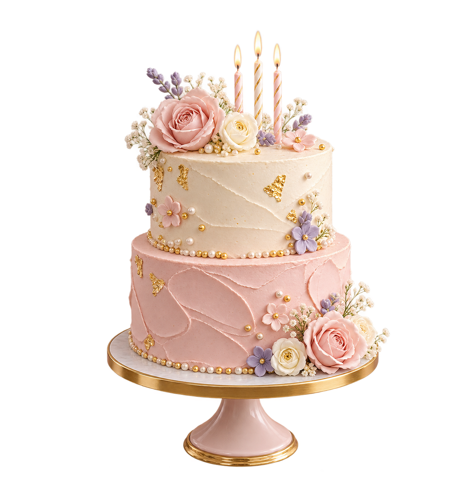
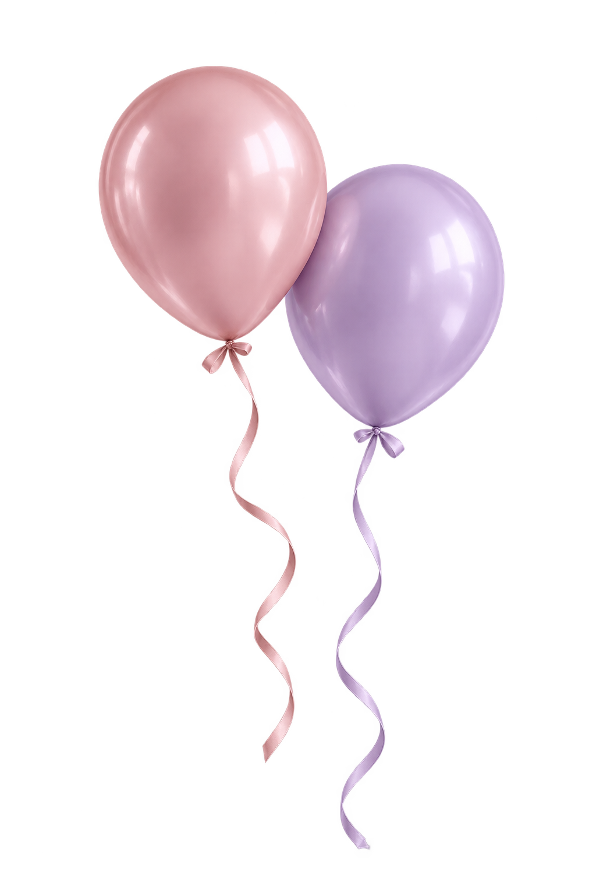
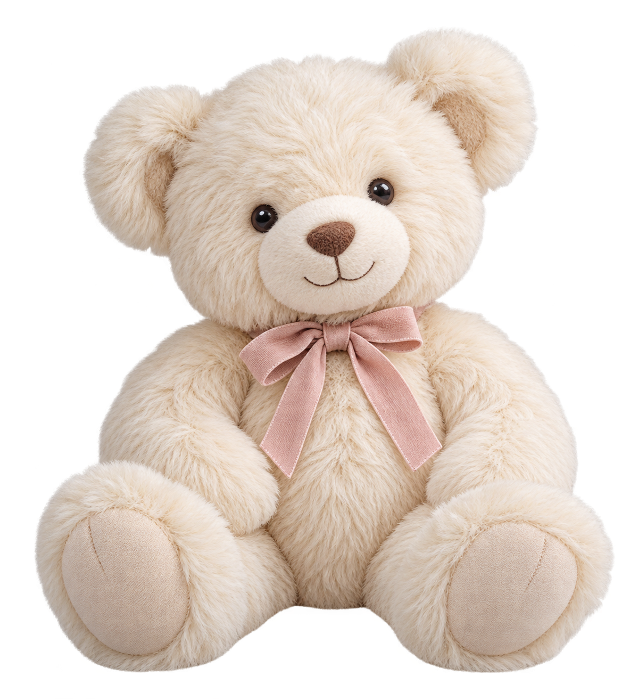

Un día especial merece algo único.
Tu celebración, tus colores, tu historia. Creamos rincones con globos y detalles para que el momento se sienta tan tuyo como lo imaginabas.





Los detalles hacen la fiesta.
Hay mil formas de celebrar.
Una fiesta infantil, un nuevo comienzo o ese logro tan esperado. Elige el motivo y descubre cómo podría verse el tuyo.
🎈 Ideas para celebrarCumpleaños
Infantiles, adultos, números y temáticas.
Ver ideas🕊️ Un día especialBautizos
Celebraciones familiares en tonos suaves.
Ver ideas ✨ La gran sorpresa
✨ La gran sorpresaRevelación
Boy or girl, azul, rosa y mucha emoción.
Ver ideas 🧸 Bienvenido, bebé
🧸 Bienvenido, bebéBaby shower
Una bienvenida delicada para el bebé.
Ver ideas🎓 Un logro para recordarGraduaciones
Un logro que merece su propio momento.
Ver ideas 🎨 A tu manera
🎨 A tu maneraPersonalizada
Colores, temáticas y propuestas a medida.
Ver ideasAsí se ve la ilusión.
Globos, color y detalles de trabajos de Deco Emma. Recorre estas ideas y encuentra eso que te hace decir: «¡así lo quiero!».


¿Un color que te encanta? ¿Una temática que le hace ilusión? Cuéntanos lo que tienes en mente y empecemos a darle forma a un rincón hecho para ese día.
Contar mi ideaDe tu idea a un día para recordar.
No hace falta que lo tengas todo decidido. Unos pocos detalles son suficientes para empezar a imaginarlo contigo.
Cuéntanos
Qué quieres celebrar y qué ambiente te gustaría crear.
Comparte
Fecha, colores, temática o una inspiración que te guste.
Concretemos
Escríbenos por WhatsApp y hablemos de tu propuesta.
Ahora toca imaginarla juntos.
Dinos la fecha aproximada, qué vas a celebrar y los colores o detalles que te hacen ilusión. El resto empieza con una conversación.